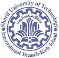

| 2011-2015 | PhD | Electrical & Systems Engineering | University of Pennsylvania | |
| 2011-2013 | MSc | Electrical Engineering | University of Pennsylvania | |
| 2006-2010 | BSc | Electrical Engineering |  | Sharif University of Technology |
| 2016-Present | Yale University | Postdoctoral Associate | 2015-2016 | Cornell University | Postdoctoral Associate |
| 2011-2015 | |
University of Pennsylvania | Graduate Research Assistant |
| Summer 2014 | NEC Labs | Summer Intern |
| 2016 | NYC ASCENT Fellowship | 2015 | Runner Up | Fels National Public Policy Challenge |
| 2015 | Winner | Penn Public Policy Challenge |
| 2010 | PhD Research Fellowship | University of Pennsylvania |
| 2006 | Awards from Iran’s President, Minister of Higher Education, & Minister of Education | |
| 2006 | 1st/600,000 | Iran Azad university entrance exam (Math-Physics) |
| 2006 | 1st/250,000 | Iran national university entrance exam (Foreign Languages) |
| 2006 | 15th/400,000 | Iran national university entrance exam (Math-Physics) |
Please head to my old website for more detailed information.